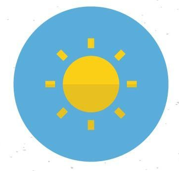

<div class="sidenav" [class.example-is-mobile]="mobileQuery.matches">
    <mat-toolbar color = "primary" class="example-toolbar" *ngIf="isLoggedIn$ | async as isLoggedIn" >
      <button mat-icon-button (click)="snav.toggle()"><mat-icon>menu</mat-icon></button>
      <h1 class="example-app-name">{{ user }}</h1>
      <h1 class="example-app-name">{{ rolTexto }}</h1>
      <span class="spacer"></span>
      
      

      <button mat-mini-fab color="accent" (click)="onUser()"> <mat-icon>person</mat-icon> </button>
      <button mat-button (click)="onLogout()" (click)="snav.close()" *ngIf="isLoggedIn">Logout</button>
    </mat-toolbar>
  
    <mat-sidenav-container class="example-sidenav-container"
                           [style.marginTop.px]="mobileQuery.matches ? 56 : 0" >
      <mat-sidenav #snav [mode]="mobileQuery.matches ? 'over' : 'side'"
                   [fixedInViewport]="mobileQuery.matches" fixedTopGap="56" class=" {{ this.clase }}" class="sidenavContent">
        <mat-nav-list >
          <a mat-list-item [routerLink]="nav.route" *ngFor="let nav of fillerNav">
              <mat-icon> {{nav.icon}} </mat-icon>
              {{nav.name}}</a>
        </mat-nav-list>
      </mat-sidenav>
      <mat-sidenav-content id="sidenav" class=" {{ this.clase }} " class="sidenavContent">
        <router-outlet></router-outlet>
      </mat-sidenav-content>
    </mat-sidenav-container>
</div>